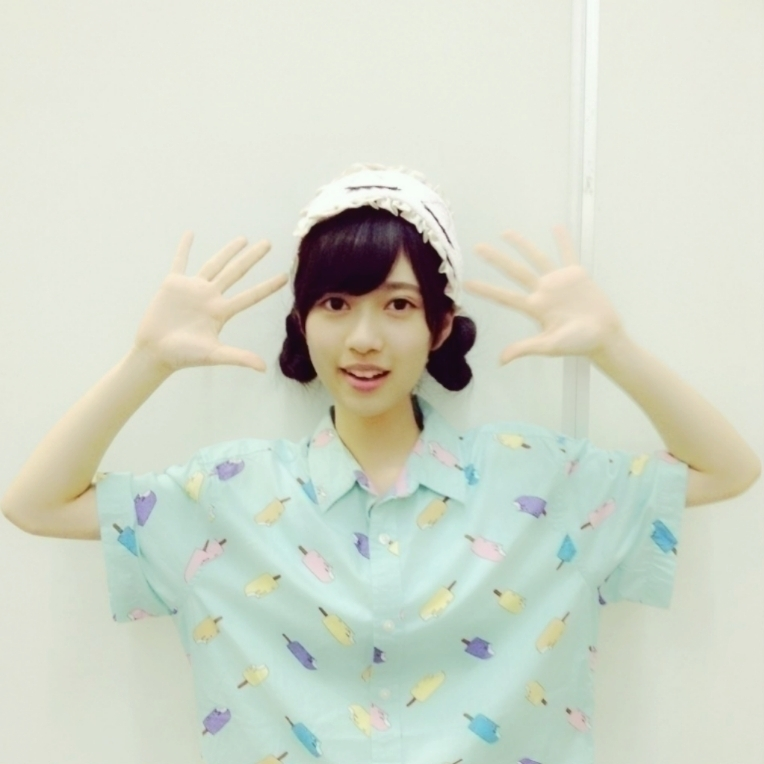
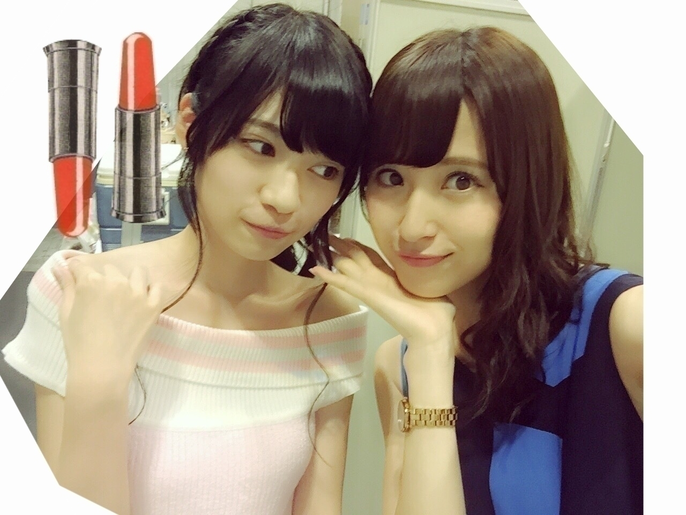
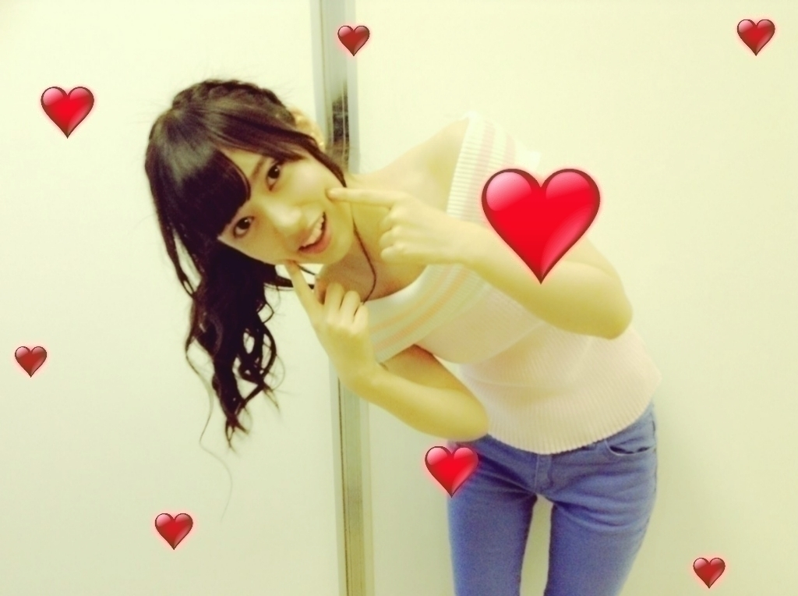
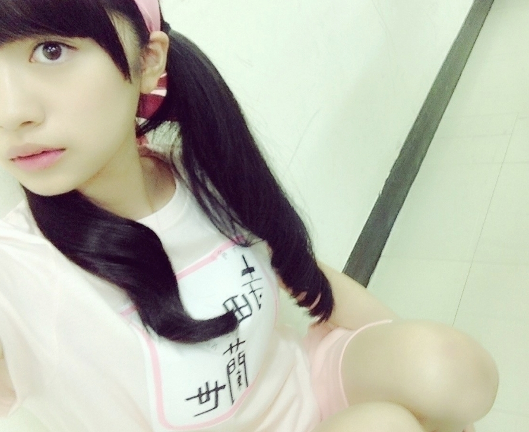

2015/0813Thuほっぺたをつねればいいのか ？そして髪を
本日髪を8センチ切りました
前髪も短くしたら
幼くなりました
メンバーにも
すぐ気付いてもらえました！
いつもあまり
変化のないカットなので
気付いてもらえて嬉しかったな
おはようございます
こんにちは
こんばんは
乃木坂46の寺田蘭世です
よろしくお願い致します。
全国握手会 京都○
ペアは生駒様でしたo(^o^)o
全国握手会は
はじめましてさんにも
沢山お会いできるので
それも楽しみの1つにしてます
会場に足を運んでくださった
皆様ありがとうございました。
ちなみに、生駒さんの
ブログにツーショットと1言が
載っていたのですが
すごく嬉しかった♬
個別握手会 京都○
パジャマを着ました
撮影者：佐々木琴子
アイマスクが目立っていたのか
いろんな人に
色んな事を言われました
モバメでは
詳しくメールしましたが
目立っちゃうのも悪くないかと！！
そう思える1日でした
全国握手会 名古屋○
カナさんと純奈と3人のレーンでした
とても楽しかったです♬
カナさんが
生ドルの時の対応をファンの方に
やってるのが隣から聞こえてきて
面白かった
カナさんは
映画のパンフレットで
書いてくださったらしく、、、
こんな私みたいな人間と
仲よくしたいって
カナさん(・_・)
これからもっと
仲良くできればなっと思います
いつも自分から
話したりとかできない
タイプなのですが
こうやって言って頂けると
もうちょっと
積極的にいこうかなーって思えます♬
カナさんペロペロです
生誕祭見にいきたかった
飛鳥さんの生誕は
お邪魔させて頂いたよ
飛鳥さんにちゃんと許可もとったよ♬
その時のお写真を
加工して飛鳥さんのお誕生日
当日に送ってみました
その画像もモバメに送ったよ
個別握手会 名古屋○
衛藤さんからもらったお洋服

寒かったので
上着着てしまいましたが
実はこんなに感じでした
衛藤さんありがとうポーズ
衛藤さんと沢山お写真撮ったよ♬
いつもより
大人っぽさを意識してみました
そしたら沢山大人っぽいって
言って頂けて良かったです
今回も沢山の方に
お会いできてよかったです
そして色んなお話が出来ました
LIVEがあるので
握手会はしばらく期間が
空いてしまいますが
LIVE来て下さる方は
一緒に楽しもうねo(^o^)o
13枚目もよろしくお願い致します
今日から13枚目個別も
受付開始しましたが
正直、不安でしかありません
やっぱり昔のこととか
思い出しちゃうと心細いし
でも、握手会の部数が増え
今までより楽しい時間が増えたって
考えるととても楽しみです♬
心配性だけど
どしっと構えてきます(・_・)
よろしくお願い致します
お風呂あがり(・_・)
いつも、ヨーグルトとかアイス
噛まなくてもいい食べ物なのに
カミカミもぐもぐしてしまい
人より食べる速度が遅い私
最近気付いたことの1つです。
LIVE○
LIVEスタートの仙台
去年よりも成長できて
それを沢山の方に
見ていただけたのかなーっと
思ってます
物凄く緊張してますが
いつも本番は言葉じゃ
表せないくらい楽しいんですo(^o^)o
まだ、セットリストとか
書けないので
具体的なことは
言えないのですが、、、
頑張ってます
来てくれる方は
よろしくお願い致します♬
BINGO○

1期生VS2期生
ようやく2期生が勝ちました
結果発表のとき
久々にあんなに
はしゃいだ気がします
よしりんさんも
ありがとうございましたo(^o^)o
企画もとても面白くて
物ボケは人生初でした
なかなか難しかったです。
コチョコチョフーフー延長戦では
思わず笑ってしまいました
本当に無だったので
まさかあんなに
若様が近かったなんて
気付かなかったんです
放送されたの見て
恥ずかしく
なっちゃいました(・_・)照
生田さん最強だと思いました
最近目が合うと
凄く無なお顔で目をそらさず
じーーっと見つめられるんです
だからまた目が合ったら
負けじと戦いたいと思います！！
LIVEの合間でも
たくさんお仕事があって
本当に充実してるなーって
ありがとうございます
書きたいこと沢山あるので
また、改めてゆっくり
書きます( ..)``
2015/08/13 15:24


コメント(916)
今週広島ライブ行くよ〜！！らんぜのこといっぱい見るから頑張ろうね！！
めっちゃかわいいです！これからよろしくo(^▽^)o
あと個握買うからねー
らんぜの勢いが止まらんぜ
大阪での全国ツアーでタオルとうちわで応援するからー！！
＋7もプレッシャーだろうけど頑張ってね
蘭世3部制おめでと！
蘭世の勢い？
とまらんぜーーーーー！
止まる気がしません。
朝から蘭世見れる幸せ。
12thの握手もよろしく！
ではさらば(*´罒`*)
夏バテに気をつけて全国ツアー頑張ってください
神宮が楽しみです
最近気になってるので、握手会行くからね！
おめでとう！
らんぜの勢いとまらんぜ（＾ω＾）
かわいかった！！！
ヒヒーン
ごめんね
今日も蘭世さん、可愛いです。
早く握手いきたいよー
今日応募するね！
ばいせこー(r_z)
こんにちは！
こないだ仙台いったよ！！
蘭のうちわ振りまくってた笑
うちわ見つけてくれた時に
レスくれて嬉しかったーよ！
神宮もいくねーー
体調に気をつけて頑張ってね！ふぁいと！
けんちゃん☆
ブログ更新待ってたよ。
ここしばらく、個握でお会いしたり
全ツ名古屋で活躍を見たり
テレビにうつる蘭世を見たり！
すごい嬉しい！
名古屋の個握でも蘭世に言われたように
ちゃんとブログコメントしたよ！笑
今日から始まった個握。
日付はまた先だけど、ちゃんと取ります♪
この夏の全ツ、頑張ってね！！！
みさみさから貰った服が似合いすぎて可愛すぎる！！！
13thの握手会ガッツリ応募したので、
会えるのを楽しみに仕事頑張ります！！！
とま、らんぜ！！
らんぜお疲れ様！
NOGIBINGOで活躍しててよかったよ！おもしろかった！
全ツ千秋楽の神宮行く！気づいてもらえるようにがんばる！レスちょうだいね！笑
9月の握手会いくときにフラフープ教えて！笑
お疲れ様〜♡♡
NOGIBINGOでの、若様はただの変態だったね笑
これから、ライブとか握手会、まだまだたくさんあるけど、蘭世が楽しそうにしてたら、自然とこっちも楽しくなってくるから
では、またね
いつもブログ見てるけど初めてコメントしてみました！
京都、名古屋と全握と個別で蘭世の所に行って、ますます蘭世の勢いとまらんぜです（笑）
LIVEは当たらなくて行けないけど9/12の幕張の全握は行くので待っててください！
あと、ブログのコメントをサボらないように誓います。アーメン
ではでは、さよならんぜ〜(´∀｀*)ﾉｼ
たくさん握手券買うから心配しないでね！！！ バイト出来ない学生だけどがんばるから笑！！！
あとねあたしも人よりたべるの遅い笑
早く神宮で会いたいな〜！！
ブログありがとー！！
うんうん！充実してるみたいだねぇ♫
嬉しく思うよ！！
てか、8センチ切ったって結構思い切ったねぇー！
蘭世だから可愛いのは間違いないやろうけどね！
ミサ先輩から洋服まで！！
似合い過ぎてる！！やはり、何着ても似合うね♫
蘭世の中で夏にこれは着たいって服はあるー？？
暑いと思うけど、体調崩さずファイトー！！
蘭世の勢い止まらんぜぇぇぇえ！
髪8センチもきったの？！
結構短くなってそう(๑º º๑)
お風呂あがりの蘭世めっちゃ可愛い(○ﾟ∀ﾟ)ｶﾞﾊｯ∵∴
後タイトル謎ですｗｗｗ
これからもLIVE後半戦頑張ってくださいな(´∇`)
ブログアップありがとう〜ヾ(*´○｀*)ノ
コメント書きたいこといっぱいいっぱいあるけど…
思いは広島公演にぶつけるよ笑笑
蘭世の勢い、止まらんぜ‼︎
ツアーの合間もお仕事で大変そうだけど、体調管理に気を付けてね♡笑
らんちゃんとの初握手だからすっっごい楽しみ！！ でも2枚しかないんだよね、、、
13thはもっと買うね！！！
京都個別ありがとう
そして全ツ名古屋もありがとう
大阪・最終神宮よろしくね(^-^)
いいパフォーマンス楽しみにしてます☆
13th部数が一気に増えたね〜
昇格してすごくメディア露出増えたし、人もいっぱい並んでたしこのままらんぜの勢いとまらんぜー！！
いつもは京都個別だけしか行ってないけど、今回は名古屋も行っちゃおうかな
みさ先輩の服で大人っぽいらんぜも魅力的だ(ﾟOﾟ)
ライブ良かったよ～！
明後日からの広島も楽しみにしてる！
ありがとね〜
13thで蘭世の分を初めて取ってみようって思ってる！
また取れたらここでコメントするね＼(^o^)／
13th個握行くからね〜！！
〜京都パルスプラザ〜
部数増えて嬉しいよ！！
=͟͟͞͞(๑•̀=͟͟͞͞(๑•̀д•́=͟͟͞͞(๑•̀д•́๑)=͟͟͞͞(๑•̀д•́
ブログ更新ありがとー！
パジャマ蘭世めっちゃかわいい！
みさ先輩からもらった服も、大人っぽくて似合ってる(^^)
握手会の部数が増えても大丈夫！
蘭世のファンは熱い人ばかりだから、みんなしっかり応援してくれると思う(^^)
1日目の仙台のライブ行ったよ^o^
ライブでものすごく輝いてて、思わず見とれちゃった笑
うちわ掲げてたら、指差して貰えて嬉しかった！
ファン想いな蘭世の姿が見れて幸せでした！
ライブが続く8月、体調に気をつけて頑張ってね(^^)
蘭世にレスもらえて幸せだった
体調気をつけて頑張って、神宮いくよ
おはよう。
なんか久々にコメントすると思ったら２週間経ってた笑
髪切ったの気付いてもらえるの嬉しいのはわかる
全ツまだまだ暑い日が続くから体調管理だけしっかりね！
名古屋楽しかったし次は広島楽しみにしてる
おやすみ
こんにちは
こんばんは
ITのプロ46のかんなです
よろしくお願い致します。
ブログありがとうございます。
取り急ぎ、御礼だけ(笑)
あとで詳しくコメントしまーす！！！
みさ先輩から貰った洋服いいね！
オトナらんぜも良い感じ〜(^^)
広島福岡大阪東京もシッカリ頑張ってね＼(^o^)／
ブログ更新ありがとう～!! 正直、更新はまだ先だと思ってたので、とってもうれしい～♪
中身をじっくり読んでから、またコメントします。
らんらんのこと、ずっと、ずっと応援してますっ!!
はやく会いたいよぉ
やほー。
あ、今更ながら妄想リクエスト予選1位おめでとう。
見たけどそりゃそうだった思ったよ。
あ、あと、個別握手会の部数増えたよね？
このまま勢いとまらんぜ！
かな？
握手たのしみにしてるよ！！！
ライブ身体気をつけて完走して(･д･｡)次は大阪でまってるよ(っ'ヮ'c)ｳｩｯﾋｮｵｱｱｧ
髪切ったのたのしみ！！
蘭世さん！
部数増えたね！！おめでとう٩(ˊᗜˋ*)و
コメントする